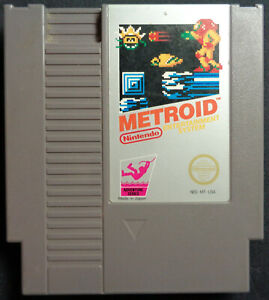
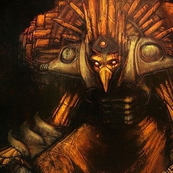
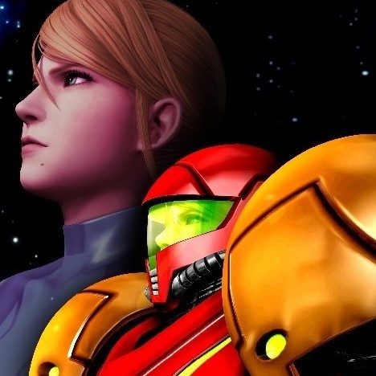
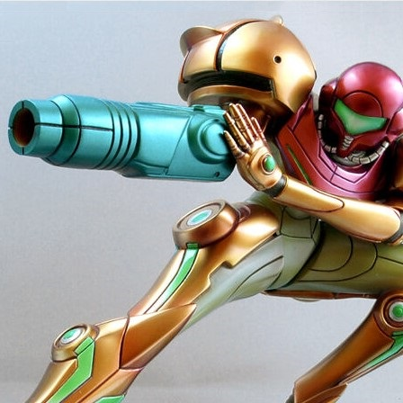
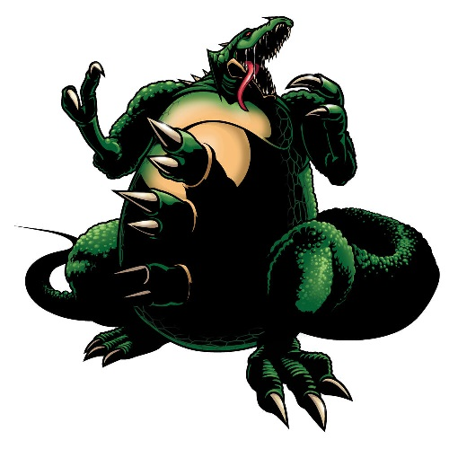
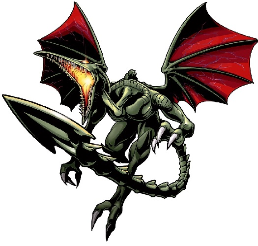
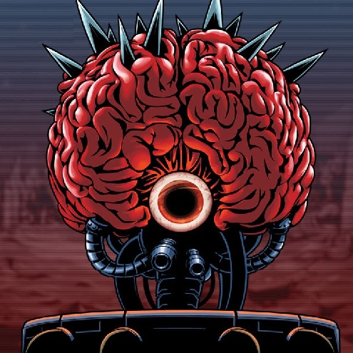
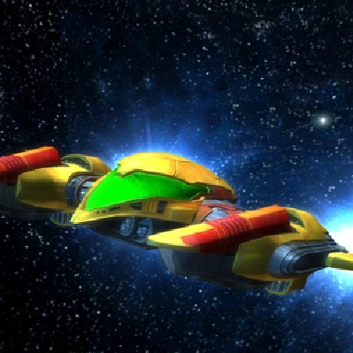

Background
METROID, developed in 1986 for the NES and Famicom Entertainment System, was a groundbreaking exploration-based platformer produced by Gunpei Yokio and directed by both Satoru Okada and Yoshio Sakamoto. This title spawned an entire METROID series of games that is still going to this day, as the latest title in the series, METROID: Samus Returns, was released only a few years ago in 2017. The original METROID, however, is notable for being the first action game ever to star a female character, with almost no one knowing about her true gender at the time until it was revealed at the end of one's playthrough of the NES classic.
A physical copy of METROID (1986) for NES
The Story
In the year 20X5 of the Cosmic Calendar, a space-fairing vessel travelling from the planet SR388 was attacked and seized by a devious gang of mercenaries known as the Space Pirates. After seizing the craft, the Pirates took it to their secret base on the planet Zebes. Aboard this vessel was an unknown life-form, soon identified as the first known METROID. This creature, possibly created for peaceful purposes, is able to absorb the life energy from any known species, and it can even multiply itself within 24 hours when exposed to beta particles. This makes the METROID highly weaponizable in the wrong hands. So, after many failed attemts to breach the surface of Zebes, the Galactic Federation of Space enlisted the aid of famous bounty hunter Samus Aran to infiltrate and destroy the space pirate base on Zebes, taking the METROIDS down with it.
The METROIDS
Some characteristics of the METROIDS:
- They are capable of absorbing the life force from any living being, nothing physical like flesh or blood.
- They can reproduce either asexually (with the help of radiation) or via a METROID Queen.
- They are resistant to most types of energy, but they have an extreme weakness to cold temperatures.
- They were created on planet SR388 by a sentient race of bird-like creatures known as the Chozo.
- They were created as a method of controlling another native parasitic species known as the X.
A METROID, as seen on Zebes
A member of the Chozo race
Samus Aran
Samus Aran was born on the planet K-2L. She lived there with her parents, Virginia and Rodney Aran, until the age of 6. It was then that the Space Pirates attacked her home colony, eliminating most everyone who stood in their way. Ridley, a highly-ranked general of the Space Pirates, went out of his way to murder Samus' parents in front of her, simply for the enjoyment of it. Only Samus made it out alive, being rescued by a group of local Chozo and later adopted into their own colony on the planet Zebes. It was there that she donned her Chozo powersuit and was trained in combat. She later joined the Galactic Federation, being directed by her new Commanding Officer, Adam Malkovich. However, following a devastating accident, she left the Federation to pursue bounties across the galaxy, hoping to never take direct orders again.
Samus, as depicted both in and out of her iconic powersuit
A figure of Samus in action!
The Pirates
Most of the Space Pirates are native Zebesians, and they are merely underlings. However, some highly-ranked Pirates of note include:
Kraid
He is the first Space Pirate general that Samus encounters on Zebes. In the original NES METROID title, he is just a little taller than Samus herself. However, in future games, he is depicted as being several stories tall, making Kraid one of the largest foes that Samus has ever brought down. He attacks by firing organic missles from his stomach and also by launching his fingernails as if they were sharp boomerangs. He also employed a smaller imposter, known as Fake-Kraid or Mini-Kraid, to guard his chambers from Samus' onslaught. This was in vain, however, for she brought both Kraid and imposter down easily before journeying deeper into Zebes' tunnels.
Kraid, as depicted in the game METROID: Zero Mission
Ridley
This sadistic space dragon is the second Space Pirate general that Samus encounters on Zebes. As mentioned before, Samus has had a torturous past with this demon of the cosmos, as she witnessed her entire family vanquished by Ridley and his subordinates. He attacks by spewing fire across the terrain, as well as using his sharp talons and knife-like tail to pierce the flesh of his foes. Thankfully, Samus' powersuit protected her from all of Ridley's murderous blows, and he was brought down by her deep in the volcanic depths of Zebes' underworld: Norfair. However, this will not be the last that Samus sees of her arch-nemesis...
Ridley, as depicted in the game METROID: Zero Mission
Mother Brain
A Chozo AI turned rogue, this mechanical monstrosity betrayed the remaining Chozo on Zebes and instead became the supreme leader of the Space Pirates. Before Samus' infiltration, her base was riddled with the very METROIDS she helped the Chozo create. Furthermore, she would have continued to propagate them until she had enough units to eventually take over the universe. However, this would not come to pass, as Samus annihilated her cerebral foe and all accompanying METROIDS before escaping the self-destruct sequence set by Mother Brain herself.
Mother Brain, as depicted in the game METROID: Zero Mission
The End
At the end of METROID (1986), satisfied with a job well done (and a base well destroyed), Samus journeys out into the cosmos in search of another bounty to hunt. Where do you think she'll end up next??
If you want to learn more about METROID, please use the provided links: